Portfolio
Forberedelse og planlægning:
Da vi fik opgaven, jeg begyndt på organisere og strukturere dem. Jeg skrevt på pappire alle emne vi fik og prøv sortere dem så de kan står under hver fag der tilhøre. Mit første mål var at forbrede teksten. Det skulle være ferdig indtil d.12 december, men det tog lidt længere tid. Det var virkelig meget teori og det var svært at styre på, hvad er vigtigt og hvad er mindre vigtig.
For design jeg havde en idee fra starten af. Websiden handle om, alt vi har lært i sidste måneder. I min hovedet, det betyder at det er masse information man skal styre på.
ForWEBUDVIKLINGpage, jeg valgt at bruge blå der simbolisere tillid. Det er også mest dominerende farve i den projekt. På background images er små forme der har hver sine plads og det skal placeres rigtig for at give det ønskede final product. Jeg forstiller mig at HTML og CSS arbejder på det samme måde.
ForKOMMUNIKATIONpage er det samme struktur, bare med forskellie budskab. Det handle stadig væk om informationer, men det orange bølger signalerer at informationer handle om føllesmessig side.
ForDESIGNpage kommer næste fra sig selv. Multifarvet background gøre dig klare at det handle om creativiteet.
Layoutjeg fik den ide at siden skal se ud som en article, altså hver side skal læses som en informations article hvor du kan nemt komme tilbage eller søge videre til næste article. Det vil sige at layout vil se sådan ud: title - stor i midden , under title, columns - hvor vores indhold skal står, citater, faktabox – billede eller noget praktiske eksempler, kilder og footer.
Jeg valg at bruge font ”Roboto” sans-serif til titler oG navbar fordi er det mest brugt typografi til Android. For tekst jeg valgt ”century old style” font fordi, jeg vil skabe den effekt af newspapper.
Selv processen og final product
Det var helt sikkre det største udfordring jeg nogensinden oplavere
Den projekt gjort mig at gennemgå alle følelsesmæssig situationer. Fra frustrationer og ked af det til motivation og glad hver gang jeg kunne selv rette fejlen eller finde rund på kodens propriety eller value.
Selv om jeg planlagt min tid ordentlig, jeg mangle stadig noget detalier og meget tekst. Jeg har brugt det første 4 dage fra koding processen til at lave en navigation hvor jeg valgt at brug javascript og det lykkes desværre ikke. Jeg startet forfra og med hjælp af css og css flexbox fik jeg gjort det færdig i 4-5 time. Selvfølgelig jeg var stolt af mig selv.
Jeg brugt ikke PHP fordi jeg vil gerne preview siden i browser og det kunne jeg ikke uden serveren fra skole. Jeg kan ikke login på dania server hjem fra.
Min kode er meget rudet. Måske andre synes også at det er svært at finde rundt , ved ikke, men jeg forstå hvad jeg har lavet. Jeg skal øver mere i css grid og flexbox. Nogen af web page er ikke responsiv mens andre er . Websiden mangle breakpoint for tablet. Det drillet mig helle processen. Layout er også langt fra at være som jeg planlagt. Jeg ændrede den flere gange gennem processen. Jeg kunne godt bruger en uge mere på at arbejde på websiden eller måske 2, hvis man vil gerne sover i normal tid og bruger tidt med familien også. Jeg havde ikke tid til at rette min stavefejl.
Generalt jeg er glad på hvordan siten se ud og især på helle processen. Selv om arbejdstid var mellem 20:00 aften og 03:00 om morgen det var spændende og jeg har lært meget. Før den her projekt jeg var ”bange” for kode eller bedre sagt, jeg stresede mig selv meget før jeg starter koding. Nu ved jeg at jeg skal side føran af computer med en stor koppe kaffe og tage det stiller. Som kilder jeg brugt bøgerne, undervisernes pdf’er, mine noter og google research.
 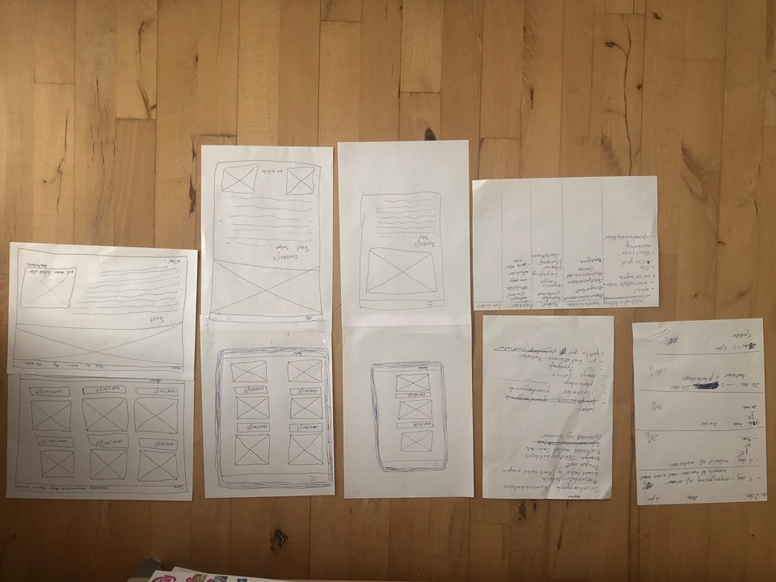
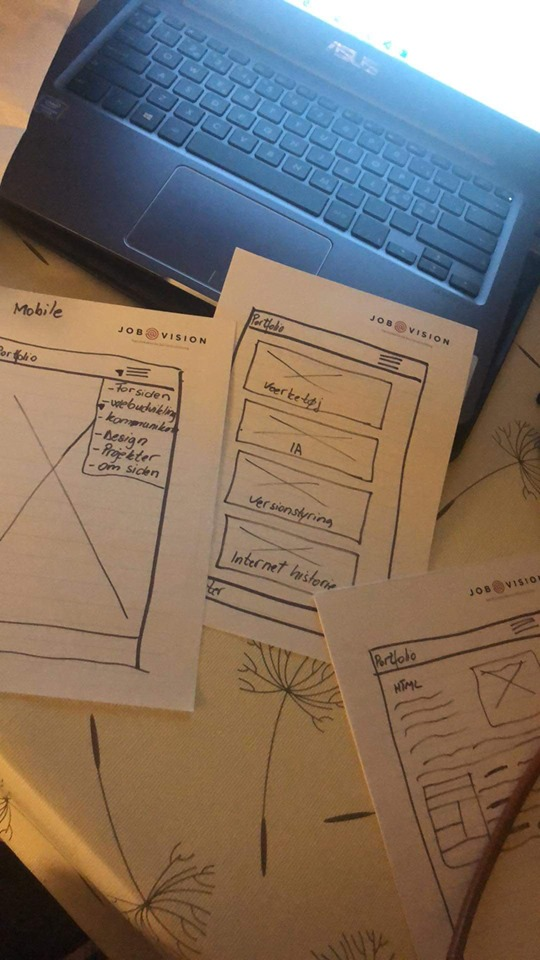
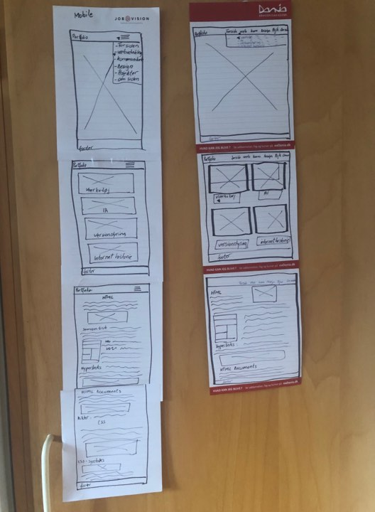
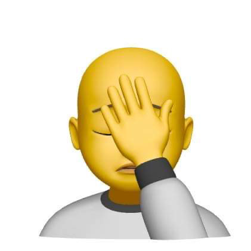
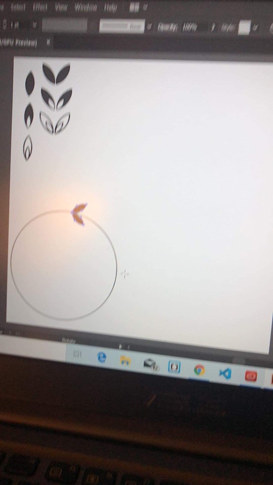
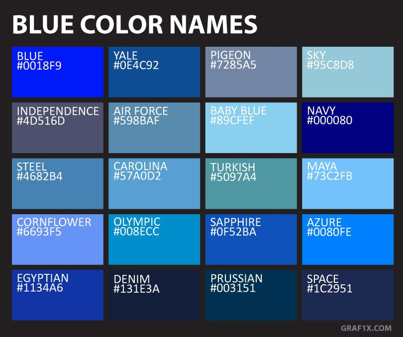
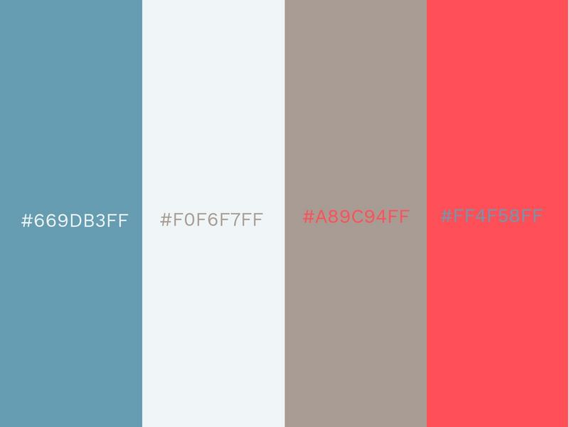
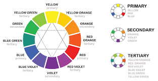
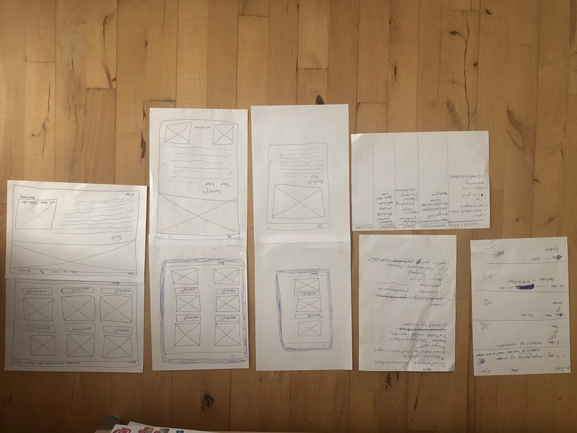
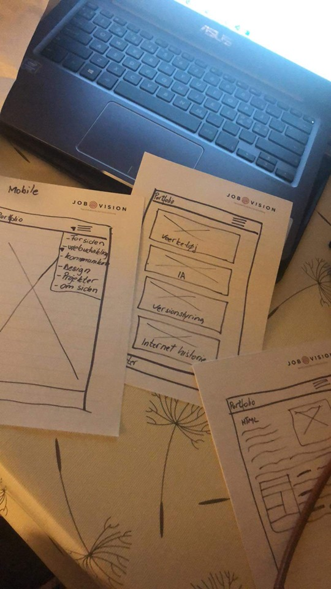
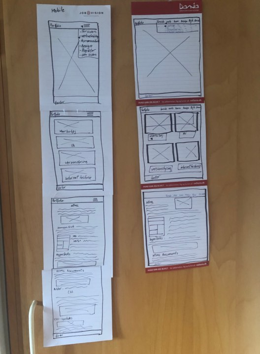
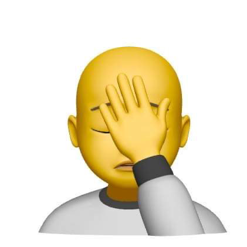
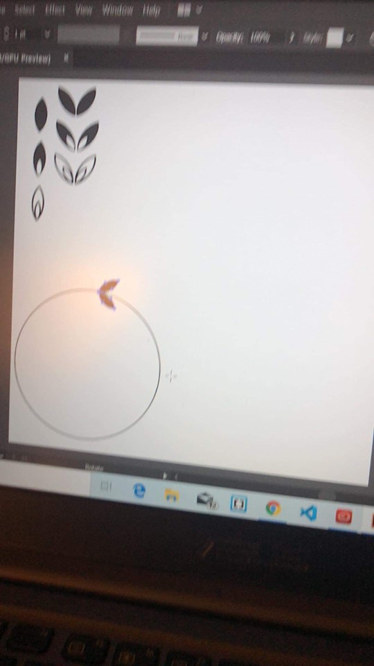
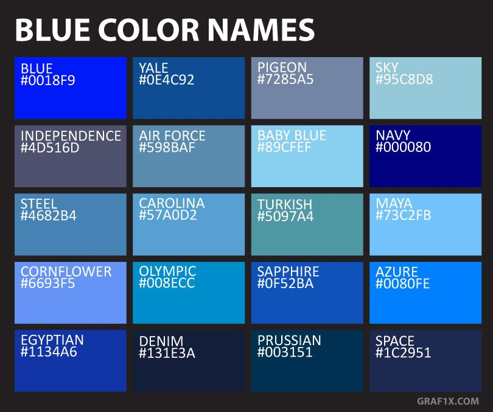
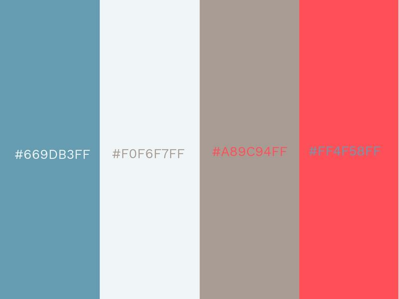
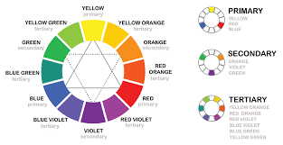
 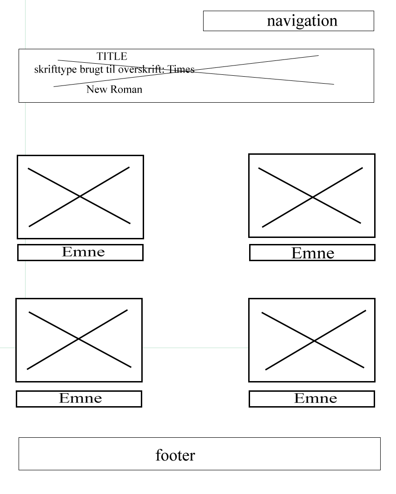
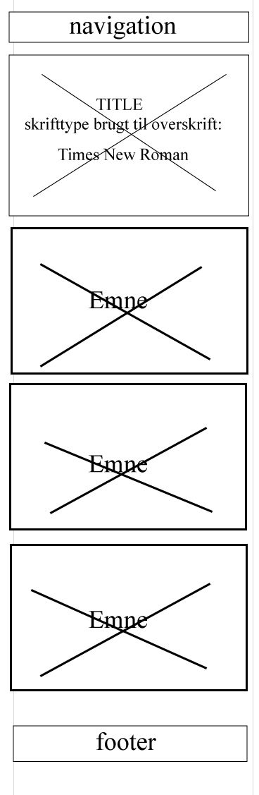
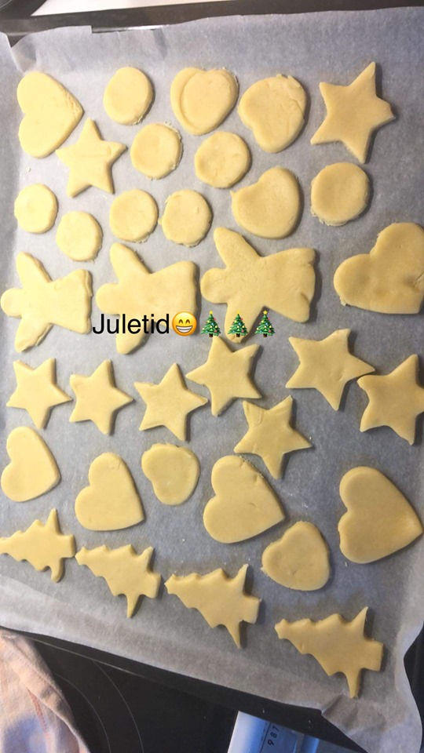
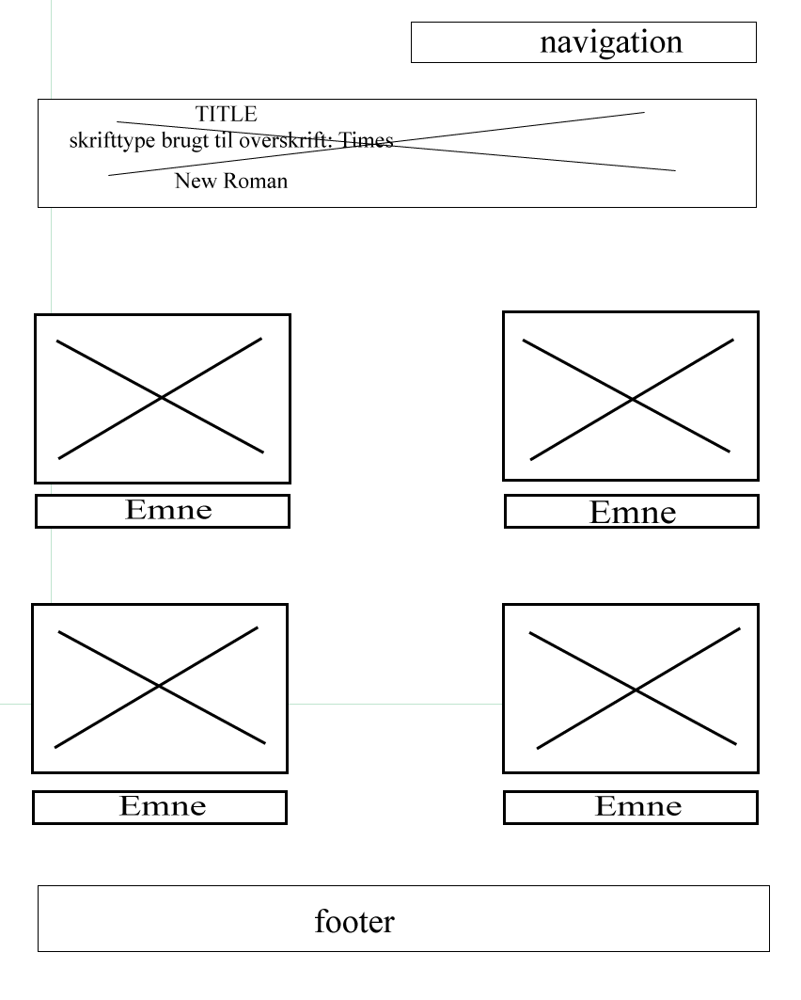
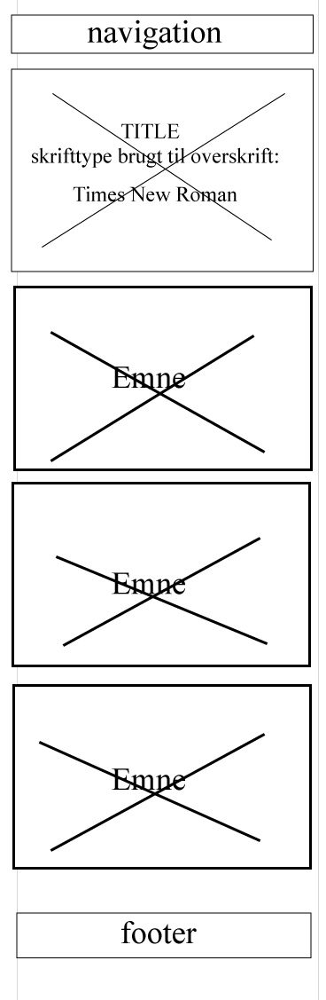
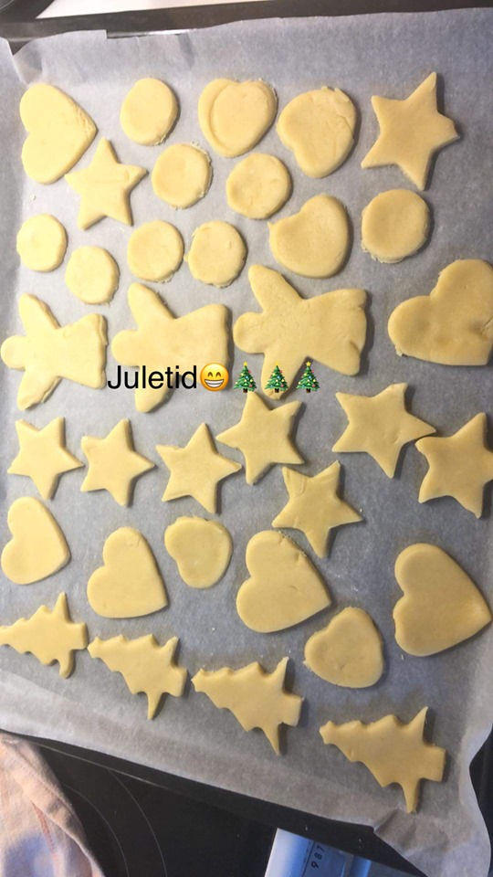